数电实验实验报告
实验一 多数表决器的设计与实现 一、实验目的
掌握基于 Vivado 的数字逻辑电路设计流程；
熟练使用 SystemVerilog HDL 的行为建模方法对组合逻辑电路进行描述；
熟练使用 SystemVerilog HDL 的结构建模方法对组合逻辑电路进行描述；
掌握基于远程 FPGA 硬件云平台对数字逻辑电路进行功能验证的流程。
二、实验环境
操作系统：Windows 10 或 Ubuntu 16.04
开发环境：Xilinx Vivado 2018.2
硬件平台：远程 FPGA 硬件云平台
三、 实验原理 1. 3-8 译码器 — — 74LS138
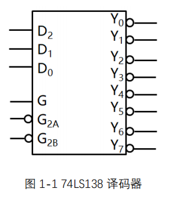
2. 2-4 译码器 — — 74LS139
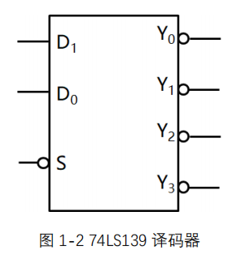
具体的真值表就不做说明了
四、实验内容和步骤 内容1：（基于集成电路模块）
根据表 1-1 和 1-2，采用 SystemVerilog HDL 的行为建模方法，完成 74LS138
和 74LS139 两种译码器的设计。
根据图 1-3 和表 1-4，基于 SystemVerilog HDL 的结构化建模方法，调用
74LS138 和 74LS139 两种译码器，以及若干基本逻辑门，完成 5 输入多数表
决器电路的设计（类似搭积木），并基于 Vivado 完成行为仿真、综合、实现、
生成比特流文件等操作，最终在远程 FPGA 硬件云平台上完成功能验证。
步骤1：（基于集成电路模块） ①首先添加源文件“dec_74LS138.sv”，通过行为建模的方法，设计一个3:8译码器，具体代码如下：
1 2 3 4 5 6 7 8 9 10 11 12 13 14 15 16 17 18 19 20 21 22 23 module dec_74LS138( input logic G,G2a,G2b, input logic [2:0] D, output logic [7:0] Y ); always_comb begin if(G==0) Y=8'b11111111; else if(G2a==1) Y=8'b11111111; else if(G2b==1) Y=8'b11111111; else begin case(D) 3'b000: Y=8'b11111110; 3'b001: Y=8'b11111101; 3'b010: Y=8'b11111011; 3'b011: Y=8'b11110111; 3'b100: Y=8'b11101111; 3'b101: Y=8'b11011111; 3'b110: Y=8'b10111111; 3'b111: Y=8'b01111111; endcase end end endmodule
②然后添加源文件“dec_74LS139.sv”，通过行为建模的方法，设计一个2:4译码器，具体代码如下：
1 2 3 4 5 6 7 8 9 10 11 12 13 14 15 16 17 18 19 20 module dec_74LS139( input logic S, input logic [1:0] D, output logic [3:0] Y ); always_comb begin if(S == 0) begin case(D) 2'b00: Y = 4'b1110; 2'b01: Y = 4'b1101; 2'b10: Y = 4'b1011; 2'b11: Y = 4'b0111; default: Y = 4'b1111; endcase end else begin Y = 4'b1111; end end endmodule
③下面通过结构化建模的方法实现五人多数表决器
方法一 ：
需要：
一个2:4译码器和四个3:8译码器
思路分析：
首先把五个人分为A、B、C、D、E，考虑D和E（分四种情况）
第一种情况：D和E都同意，A、B和C中至少有一人同意灯就亮，即排除A、B和C三个人都不同意的情况(即图中Y8正常，Y5、Y6、Y7均为8’b11111111)
第二种情况：D同意E不同意，A、B和C中至少有两人同意等才亮（假设Y7正常，其余全为8’b11111111)
第三种情况：E同意D不同意，A、B和C中至少有两人同意等才亮（假设Y6正常，其余全为8’b11111111)
第四种情况：E和D的不同意，A、B和C必须都同意
下面是电路图
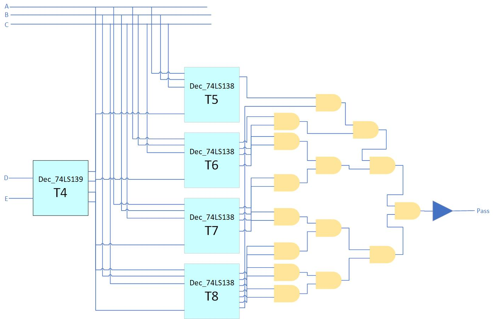
相应的代码为
1 2 3 4 5 6 7 8 9 10 11 12 13 14 15 16 17 18 19 20 module voter5( input logic [4:0] I, output logic pass ); logic G = 1'b1; logic G1 = 1'b0; logic [3:0] TEMP; logic [7:0] Y5; logic [7:0] Y6; logic [7:0] Y7; logic [7:0] Y8; dec_74LS139 T4(.S(1'b0),.D(I[4:3]),.Y(TEMP)); dec_74LS138 T5(.G(G),.G2a(G1),.G2b(TEMP[0]),.D(I[2:0]),.Y(Y5)); dec_74LS138 T6(.G(G),.G2a(G1),.G2b(TEMP[1]),.D(I[2:0]),.Y(Y6)); dec_74LS138 T7(.G(G),.G2a(G1),.G2b(TEMP[2]),.D(I[2:0]),.Y(Y7)); dec_74LS138 T8(.G(G),.G2a(G1),.G2b(TEMP[3]),.D(I[2:0]),.Y(Y8)); assign pass = ~(Y5[7]&Y6[3]&Y6[5]&Y6[6]&Y6[7]&Y7[3]&Y7[5]&Y7[6]&Y7[7]&Y8[1]&Y8[2]&Y8[3]&Y8[4]&Y8[5]&Y8[6]&Y8[7]); endmodule
方法二 ：附加题
需要：
3个3:8译码器
思路分析：
首先把五个人分为A、B、C、D、E，考虑D和E（分三种情况）
第一种情况：D和E都同意，A、B和C中至少有一人同意灯就亮，即排除A、B和C三个人都不同意的情况
第二种情况：判断D是否同意，如果同意，则再至少有两人同意即可；否则至少需要3人同意灯才能亮
第三种情况：判断E是否同意，如果同意，则再至少有两人同意即可；否则至少需要3人同意灯才能亮
第二三种情况可以通过观察A、B和C的输入情况判断相应的输出情况，如A、B和C的输入情况有000,001,010,011,100,101,110,111，其中000,001,010,100这些情况最多只有1人不满足条件（输出为1），所以只需要将这些情况取与，如果全为1，则代表不满足这些情况，自然就满足了至少两人的条件
而3人同意，即A、B和C都同意的情况下，输出的第七位为0
根据上面的分析，我们可以画出相应的电路图（不完整版）
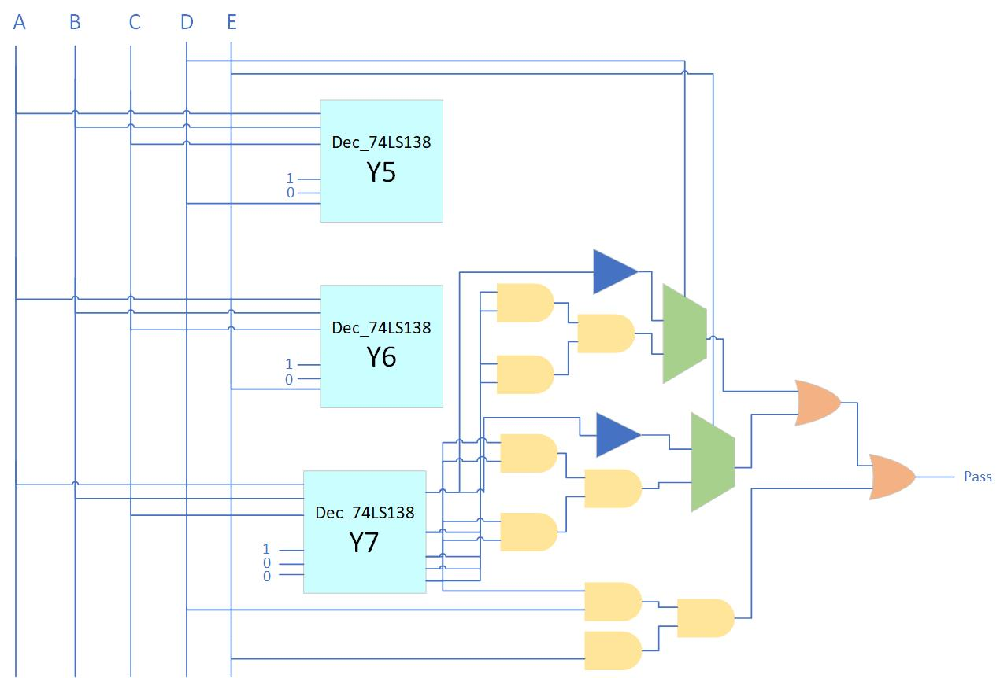
相应的代码为
1 2 3 4 5 6 7 8 9 10 11 12 13 14 15 16 17 18 19 module voter5( input logic [4:0] I, output logic pass ); logic G = 1'b1; logic G1 = 1'b0; logic G2 = 1'b0; logic [7:0] Y5; logic [7:0] Y6; logic [7:0] Y7; logic A1,A2,A3; dec_74LS138 T5(.G(G),.G2a(G1),.G2b(I[3]),.D(I[2:0]),.Y(Y5)); dec_74LS138 T6(.G(G),.G2a(I[4]),.G2b(G2),.D(I[2:0]),.Y(Y6)); dec_74LS138 T7(.G(G),.G2a(G1),.G2b(G2),.D(I[2:0]),.Y(Y7)); assign A1 = (!((~Y5)|(~Y6)))& (Y7[0]); assign A2 = Y5 == 8'b11111111 ? (Y7[0] & Y7[1] & Y7[2] & Y7[4]) : (!Y7[7]); assign A3 = Y6 == 8'b11111111 ? (Y7[0] & Y7[1] & Y7[2] & Y7[4]) : (!Y7[7]); assign pass = A1 | A2 |A3; endmodule
④编写测试程序
添加测试文件”voter5_tb.sv”，编写相关代码如下：
1 2 3 4 5 6 7 8 9 10 11 12 13 14 15 16 17 `timescale 1ns/1ns module voter5_tb(); logic [4:0] I; logic pass; integer i; voter5 DUT(.I(I),.pass(pass)); initial begin for(i=0;i<32;i=i+1) begin I=i; #20; end end initial begin $timeformat(-9,0,"ns",5); $monitor("At time %t: I=%b,pass=%b",$time,I,pass); end endmodule
仿真结果:
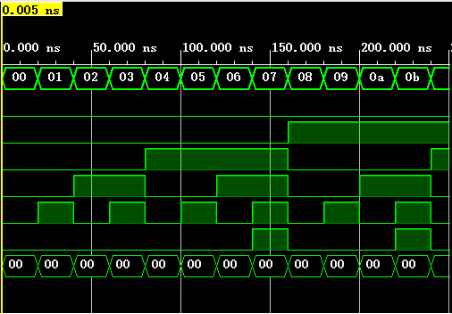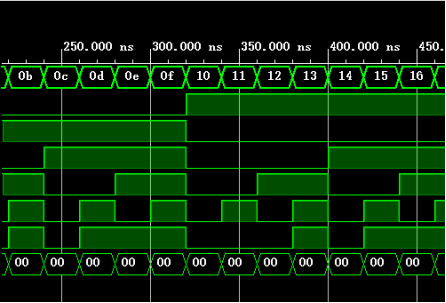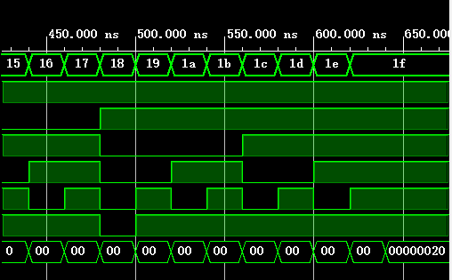
⑤编辑约束文件
根据”远程硬件平台管脚对应关系.xlsx”，选择对应的管脚，约束文件（voter_xdc.sv）如下：
1 2 3 4 5 6 7 set_property -dict {PACKAGE_PIN B9 IOSTANDARD LVCMOS33} [get_ports {I[0]}]; set_property -dict {PACKAGE_PIN D11 IOSTANDARD LVCMOS33} [get_ports {I[1]}]; set_property -dict {PACKAGE_PIN B11 IOSTANDARD LVCMOS33} [get_ports {I[2]}]; set_property -dict {PACKAGE_PIN B12 IOSTANDARD LVCMOS33} [get_ports {I[3]}]; set_property -dict {PACKAGE_PIN A10 IOSTANDARD LVCMOS33} [get_ports {I[4]}]; set_property -dict {PACKAGE_PIN K13 IOSTANDARD LVCMOS33} [get_ports {pass}];
确认无误后，再分别综合、实现、生成bin文件。
⑥远程云端硬件实验平台验证
自定义管脚：
输入管脚分别为I[0]、I[1]、I[2]、I[3]、I[4]，位宽均为1BIT，连接的管脚分别为0、1、2、3、4
输出管脚为pass，位宽为1BIT，连接的管脚为4
具体如图：
FPGA烧写上传bin文件，然后运行实验，以下是示例
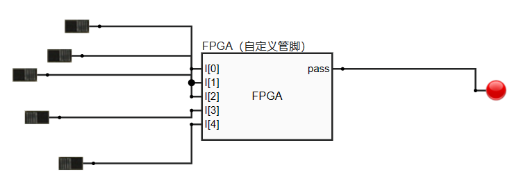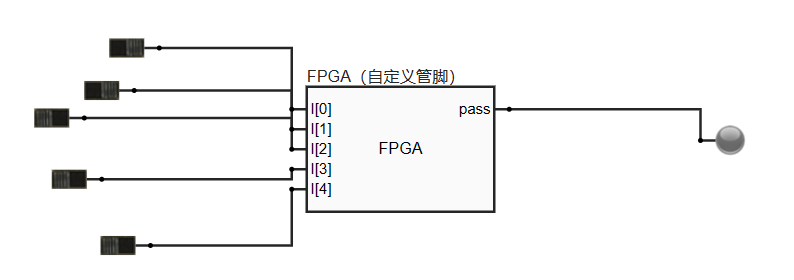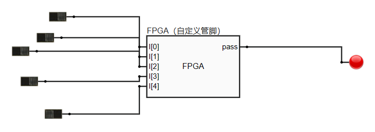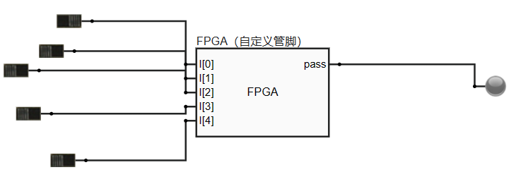
内容 2：（基于行为建模）
不使用 74LS138 和 74LS139 芯片，直接使用行为建模的方法完成 5 输入多数表决器电路的设计，并基于 Vivado 完成电路的行为仿真、综合、实现、生成比特流文件等操作，最终在远程 FPGA 硬件云平台上完成功能验证。
步骤 2：（基于行为建模） ①思路分析：
可以把输入的值每一位都相加，如果这个sum大于半数，则通过；否则没有通过。代码如下：
1 2 3 4 5 6 7 8 9 10 11 12 13 14 15 16 17 //voter5.sv module voter5( input logic [(2*count):0] I, output logic pass ); parameter count = 2; logic [7:0] mysum; integer i; always_comb begin mysum = 0; for (i = 0; i <= 2 * count; i = i + 1) begin mysum = mysum + I[i]; end pass = (mysum > count) ? 1'b1 : 1'b0; end endmodule
②测试程序
和内容1中的测试程序一致
1 2 3 4 5 6 7 8 9 10 11 12 13 14 15 16 17 `timescale 1ns/1ns module voter5_tb(); logic [4:0] I; logic pass; integer i; voter5 DUT(.I(I),.pass(pass)); initial begin for(i=0;i<32;i=i+1) begin I=i; #20; end end initial begin $timeformat(-9,0,"ns",5); $monitor("At time %t: I=%b,pass=%b",$time,I,pass); end endmodule
结果如下：
③编辑约束文件，综合、实现并生成bin文件
④远程平台验证
结果如下：
五、实验总结 注意附加题已在上面的步骤1：（基于集成电路模块） 中给出
本次实验对于我而言，在结构化建模构造五人表决器时还是有一定难度的，通过查阅相关资料，目前已经学会了两种方法来构造；
对于行为建模而言较为简单，也是基础题型。
另外，由于第一次使用vivado和远程硬件平台，相关操作不太熟练，耗费了大量的时间，希望以后能够多加练习。
注意，以下代码是错误的
1 2 3 4 5 6 7 8 9 10 11 12 13 14 15 16 17 18 19 module dec_74LS139( input logic S, input logic [1:0] D, output logic [3:0] Y ); assign Y = 4'b1111; always_comb begin if(S == 0) begin case(D) 2'b00: Y[0] = 0; 2'b01: Y[1] = 0; 2'b10: Y[2] = 0; 2'b11: Y[3] = 0; endcase end end endmodule
具体原因是不能现在always_comb外部定义Y，然后内部进行赋值；同时if..else语句不完整，case没有default